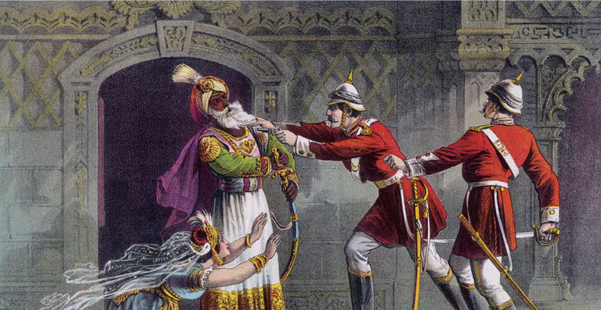
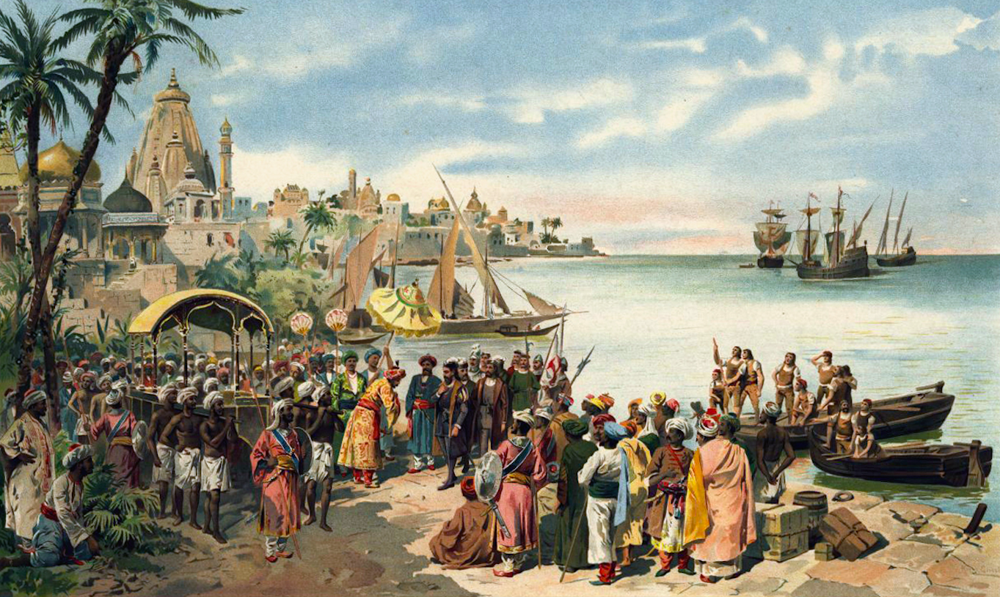

Colonial Powers
To get a better understanding of how these design practices develop, we need to look into the different colonial powers during this time. There were three main colonial powers that left the most impact on Indian life, art, and culture. Hover on the image to find out and click on the images to learn more.


